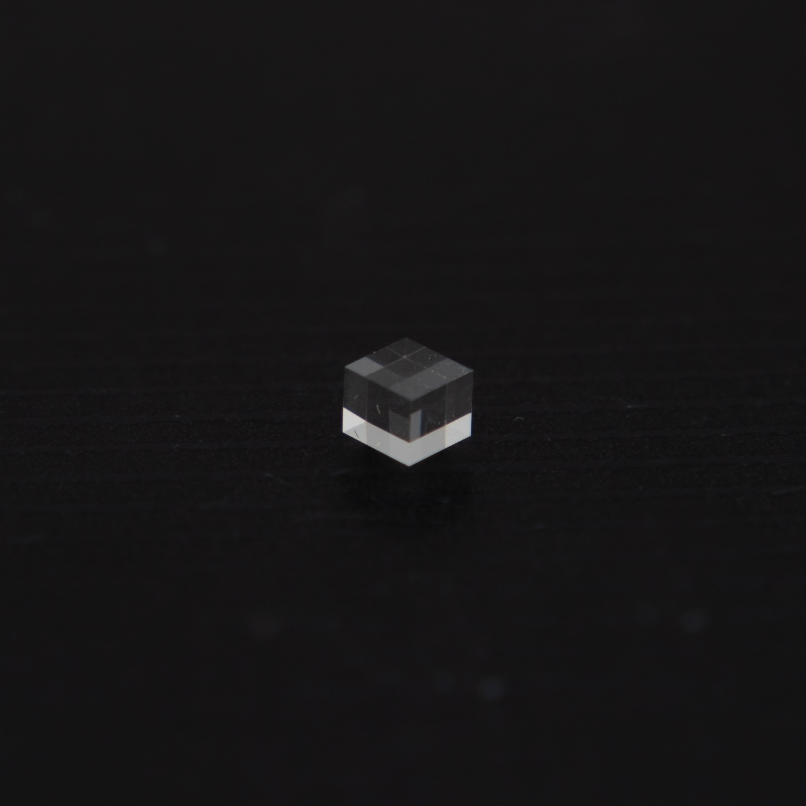
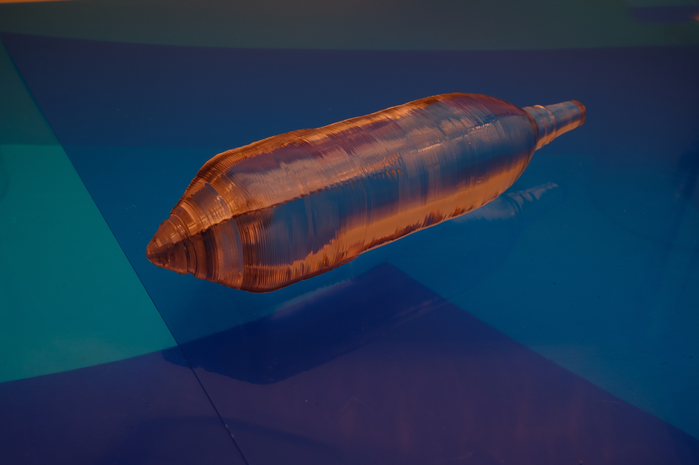
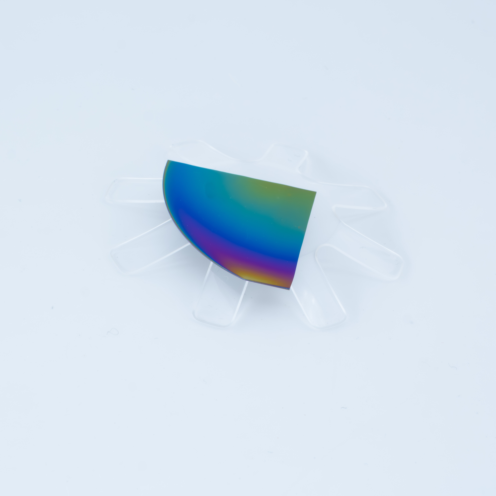
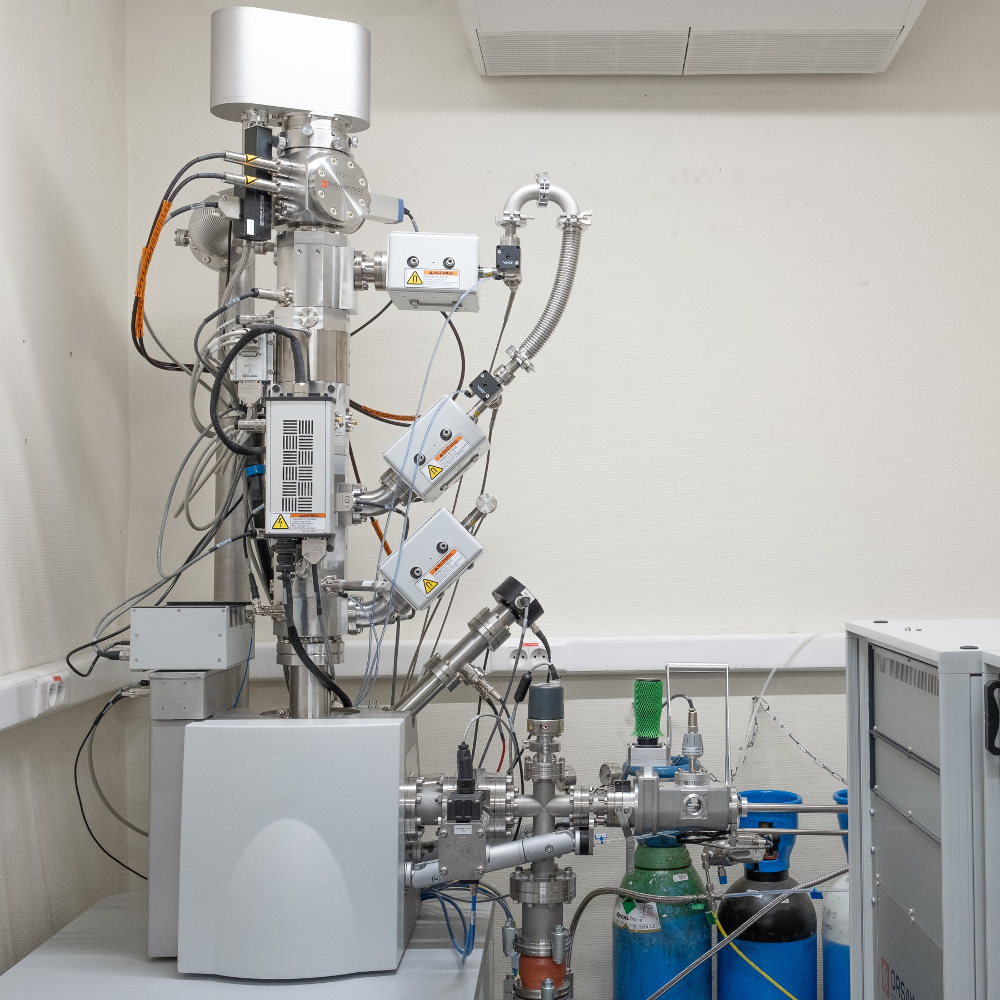
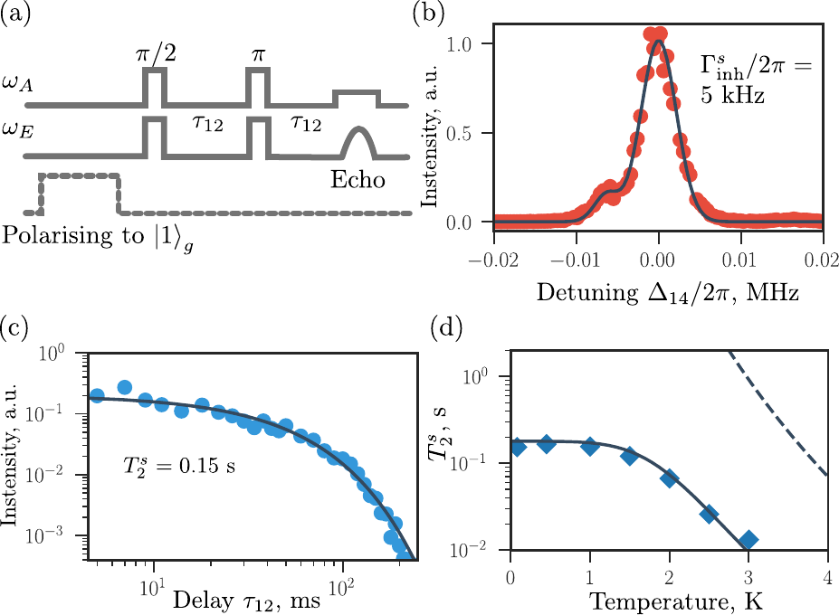

Quantum memories
Rare-earth-doped bulk crystals with long-lived optical and spin coherences for quantum memories designed to support long-distance quantum communication.
Bulk crystals · Coherent spectroscopyInstitut de Recherche de Chimie Paris CNRS · Chimie ParisTech – PSL
Crystals and Quantum State Dynamics (CQSD)
Crystals and Quantum State Dynamics (CQSD) is an academic research group at the Paris Institute for Chemical Research (IRCP), affiliated with CNRS, Chimie ParisTech and PSL University. We design, grow and study quantum-grade crystalline materials—from bulk crystals to nanostructures—and explore their integration into photonic and sensing devices.

A shared scientific vision
CQSD brings together crystal growth, materials science, optical spectroscopy and quantum physics. Our shared goal is to create solid-state platforms in which fragile quantum states can be prepared, controlled and connected.
This integrated approach links the atomic-scale environment of quantum emitters to our progress towards their integration into photonic and sensing architectures.
Research
Preserve coherence while making quantum states useful, addressable and ready to connect.

Rare-earth-doped bulk crystals with long-lived optical and spin coherences for quantum memories designed to support long-distance quantum communication.
Bulk crystals · Coherent spectroscopy
Nanocrystals, thin films and molecular crystals designed to preserve quantum states while coupling efficiently to light.
Nano-optics · Light–matter interfaces
Diamond colour centres in thin films and nanoparticles for magnetic and pressure sensing.
Thin films · NanodiamondsOur approach
One team connects every step, from the chemistry of a host material to the quantum behaviour of the emitters embedded within it.
Choose emitters, hosts and local environments.
Create bulk crystals, films and nano-objects.
Resolve optical and spin dynamics.
Design materials for future integration into photonic architectures.
Research highlight · 2026
Ytterbium-171 ions in calcium tungstate retain spin coherence for up to 0.15 seconds and can be controlled entirely with light, making the material a promising platform for future quantum memories.

People
CQSD is a multi-investigator environment where complementary expertise and shared experimental platforms create room for independent ideas.
Meet the complete team ↗Principal investigator
Research Director · CNRS
Philippe Goldner is a CNRS research director at the Paris Institute for Chemical Research (IRCP). His research focuses on rare-earth-doped and hybrid crystalline materials for optical quantum technologies, spanning materials development, coherent spectroscopy and quantum-state control. He coordinated the European FET-Open NanoQTech project and received an ERC Advanced Grant in 2021. His distinctions include the Stars of Europe award (2020), the CNRS Silver Medal (2022) and the Philippe A. Guye Prize of the French Academy of Sciences (2024).
Publications
Opportunities
We welcome researchers who want to develop ambitious work at the intersection of quantum science, photonics, chemistry and advanced materials.
Open position · Tenure track
PSL University is recruiting in materials chemistry and/or physics for the NanoPhotQ project at IRCP. The position offers a reduced teaching load, competitive salary and start-up funding, with a pathway to a tenured professorship.